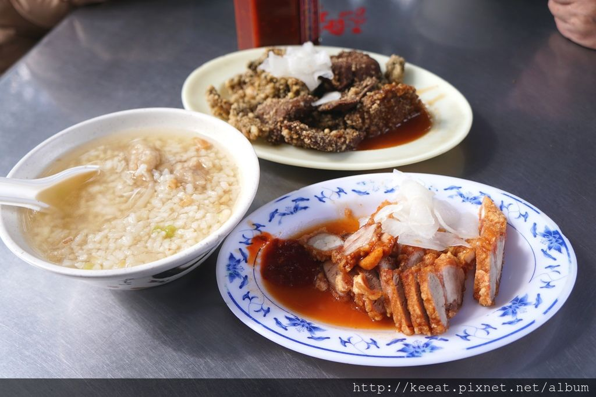
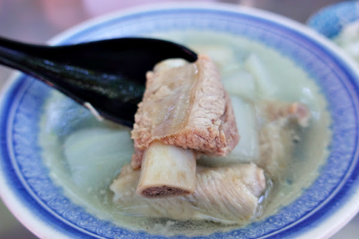
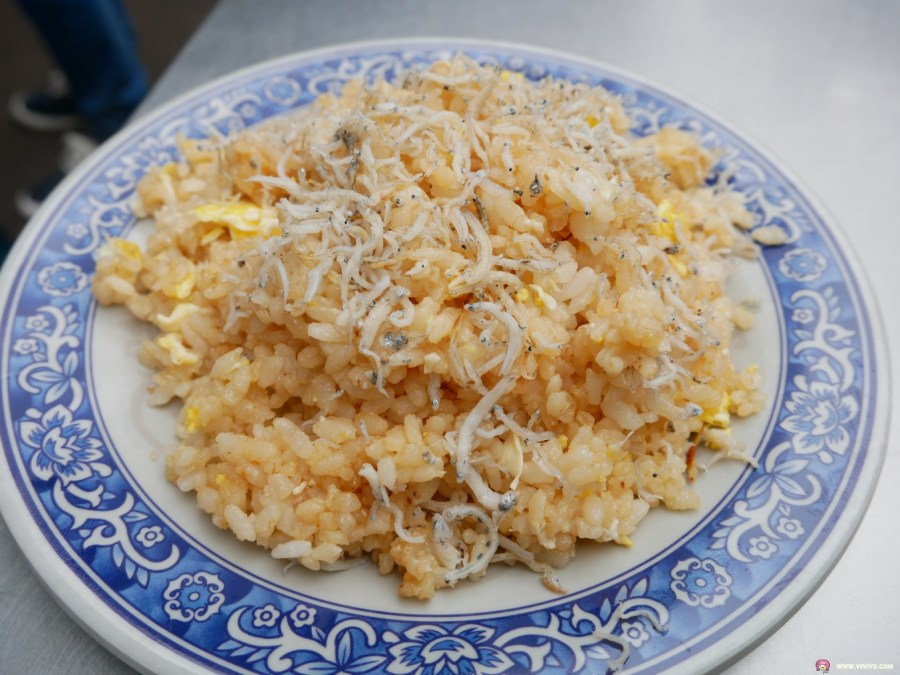

庶民美食


永樂擔仔麵
 臺北市大同區南京西路233巷20號（永樂市場旁）
臺北市大同區南京西路233巷20號（永樂市場旁）
迪化街永樂市場周邊聚集多樣傳統美食， 「永樂擔仔麵」、「民樂旗魚米粉湯」、「臺南𩵚魠魚羹」、「永樂臭豆腐」 其中「永樂擔仔麵」更曾受日本〈孤獨美食家〉節目介紹，此區多樣平價庶民美食聚集 ，是來迪化街不可錯過的美食區域。
慈聖宮廟口美食
美食聚集的大稻埕慈聖宮廟口，著名店家有「葉家肉粥」、「原汁排骨湯」、「阿蘭魩仔魚蛋炒飯」等， 拜完拜在廟口享受傳統美食，體會大稻埕的日常風光，是最道地的旅行體驗。
  慈聖宮廟口美食
美食聚集的大稻埕慈聖宮廟口，著名店家有「葉家肉粥」、「原汁排骨湯」、「阿蘭魩仔魚蛋炒飯」等， 拜完拜在廟口享受傳統美食，體會大稻埕的日常風光，是最道地的旅行體驗。


古早餅弟免煎嗲
迪化街義美前，古早餅弟複製古法，送上熱騰騰的傳統臺式點心免煎嗲， 一同體會臺式點心的美好。
永樂車輪餅
迪化街大排長龍的臺灣人氣美食，除了傳統的紅豆、奶油外，也推出紫心地瓜、蘿蔔絲等特色口味 成為大稻埕最具人氣與特色的店之一。
永樂車輪餅
迪化街大排長龍的臺灣人氣美食，除了傳統的紅豆、奶油外，也推出紫心地瓜、蘿蔔絲等特色口味 成為大稻埕最具人氣與特色的店之一。
精緻美食
福來許珈琲館
臺北市大同區迪化街一段76號
位於迪化街一段的福來許珈琲館，仍有美麗的女給，穿著復古的旗袍， 為各位端上有著漂亮拉花的咖啡拿鐵，或者帶有在地特色的茶飲。更多的 是能滿足五臟廟的小農餐食、月老文化甜點、在地風味調酒，聽著當年的臺語老歌， 創造屬於我們這個時代的珈琲館文化。

波麗路西餐廳
臺北市大同區民生西路314號
位於民生西路上的波麗路西餐廳， 1934年開業，為全台第一間西餐廳， 見證了大稻埕的繁華起落，時代的更迭。 走進波麗路 品嚐臺灣人最先認識的西餐味。

稻舍
臺北市大同區迪化街一段329號
大稻埕米行第五代返家，米食主題餐館重現家族碾米事業，在年逾百歲的紅磚洋樓裡， 以現碾的米， 煮一碗飯，誠摯端上，臺農71號益全香米，現碾現煮，聞得到 芋頭香，食材取自在地商家，每道料理，匯聚在地精華。

鯉魚
臺北市大同區迪化街一段169號
漫步在熙來攘往的大稻程迪化老街，難忘這古色古香的美味記憶，用「初心」做料理，把家傳的南北貨食材入菜 讓辦桌料理也能在家常菜中幸福入口，這是鯉魚誕生初衷，歡迎來找回你的美食拼圖。